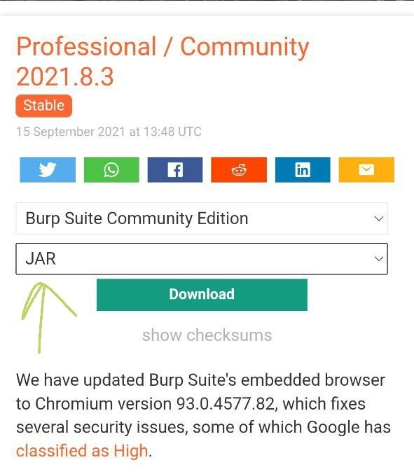

RNX OS - Docs - How to install burpsuite in RNX Linux
---------
Author :- Rishabh Sarswa (Rishu)
 Instagram(Rishu) : Here
How to install burpsuite on RNX Linux
-----------
Instagram(Rishu) : Here
How to install burpsuite on RNX Linux
----------- RNX OS - How to install burpsuite in RNX Linux
---------
Index - Table
Burp Suite is a set of tools used for penetration testing of web applications
##### Method 1 #####
add kali repository Guide
login to root user
su
then
apt update
apt install burpsuite
Enjoy
All done
burpsuite is installed
##### Method 2 #####
Step 1 :
download burpsuite in jar format
Download Link

Step 2 :
install java if not installed
then install java
login to root user
su
then
apt update
apt install default-jre
Step 3 :
navigate to downloaded folder
then run command in GUI terminal as user
not as root
java -jar burpsuite*.jar
Step 4 :
Enjoy
All done
burpsuite is running
credits : Rishabh Sarswa : Contact Telegram
message me if you want to suggest something for RNX / facing any issues links are given below
----------------------------------
Youtube : Here
Twitter : Here
Instagram(Rishu) : Here
Facebook : Here
WhatsApp(Rishu) : Here
Mail : i.awnto@gmail.com
Telegram : Channnel
Telegram : Group
Telegram : Help Desk
----------------------------------